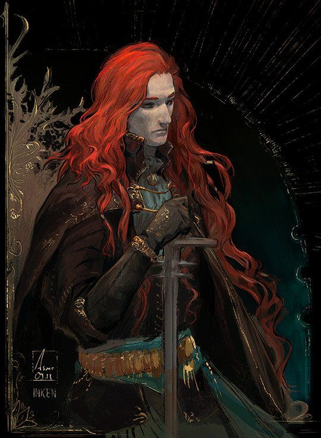
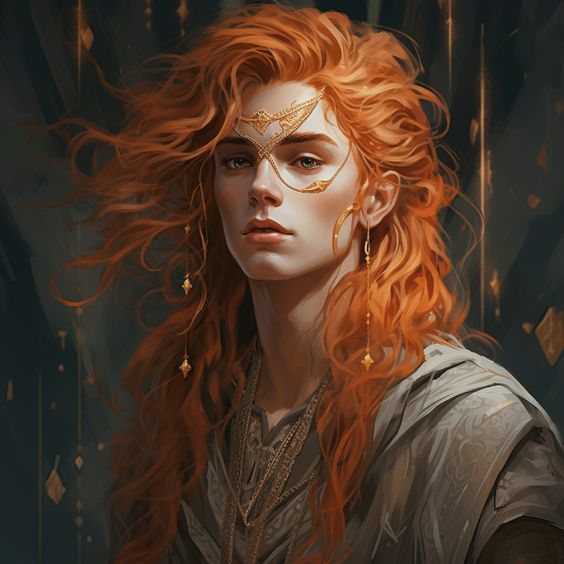

Gideon, the AlchemistIn the vast lands of the Dawns, Gideon stood as the beacon that illuminated every tortuous night. Once a noble knight, he intertwined his destiny with the mysteries of the science of alchemy, catapulting himself to total notoriety and power through his exploits and heroics with the promise of exorcising all the darkness and magic that had wrought so much havoc upon that world. With his unmatched skill with the sword and the alchemical art, the red-haired man led crusades against the dark lands and the yoke of the Dark Zenith, being named by the southern lands as the supreme monarch during the rebellion, being adored and loved in equal measure. With wisdom, nobility, and mystery, and alongside his Ten Knights, the only people allowed to wield magic and leaders of the Golden Order, he created a bastion against magic and darkness in the west, naming such lands as The Land of Dawns, thus contrasting the shadows that already engulfed that world. His image became a beacon of hope for those who fought against the shadows, and his name was uttered with reverence and respect in every corner. His story resonated like a living myth, a tale of bravery and sacrifice that sought to nourish the souls of his people. The Ten Knights, loyal companions of Gideon, became legends in their own right. Each possessed unique abilities and an indomitable fervor for the cause. Together, they formed an unstoppable force that protected the Land of Dawns from the clutches of darkness. The bond between the king and his knights was more than a simple military alliance; it was a brotherhood forged in the flames of battle and cemented by a common purpose. However, on a fateful day, Gideon was gravely wounded during an ambush orchestrated by the leaders of the Dark Zenith. The light emanating from Gideon was cast into the shadows, and his pristine image was forced to be 'exiled' under the protection of the Radiant Bastion, the name by which the castle of the kingdom was known. He was no longer seen, and rumors began to spread. Some still believed in his light, as it was well known, or so it was said, that Gideon continued to reign and seek prosperity for his lands from the bastion. However, others said that the wound inflicted upon him had poured darkness into his soul, and that in the towers of the bastion, an insatiable ambition was now brewing. Where Gideon, the Alchemist, king of the dawns, rose as a titanic figure that defied the limits of reality and imagination, now he bowed before that world as an elusive figure who ruled the western lands from the radiant towers of the Bastion, generating hope, rumors, and suspicions alike. |
||||||||||||
| Personality |
|---|
|

'The king of dawns'. Gideon was a figure of complex and multifaceted personality. In his days of glory, he stood out as a brave, noble, and wise leader. His skill with the sword and his mastery of alchemy made him a revered hero beloved by his people. The king was not only a military leader, but also a forger of a brotherhood based on a common purpose. This deep connection between the king and his people, especially his knights, went beyond a simple alliance, theirs being a people forged in the flames of battle. However, when the tragedy of that fateful night struck the foundations of the Lands, that heroic and radiant figure began to fade. As he ceased to be seen and rumors spread, they also did so about his physical and mental state. The only thing they had of him was the enduring memory of his crusades and battles, but everything was overshadowed by a defeat, which for some washed away everything else. |
| Background |
|---|
Chapter 1: Dawn.

Gideon en su juventud. The lands of Fae'Gir were blessed when The Sword of the Limit, a renowned knight of the Dark Zenith, and the Daughter of the Forest had a child. It wasn't the first time that the human world and the world of mysticism united to conceive something beautiful, but it was indeed the first time that the birth of a half-breed, son of a human and a respected druid, caused so many prophets to start talking about what that child aspired to be. However, The Sword and The Daughter wanted to keep their beloved child away from such prophecies. They wished for the little one to grow up healthy, strong, and safe, and they knew very well that, in a world like theirs, that would only attract forces that no one could deal with. Dark, cursed, and hurtful forces. For that reason, The Sword of the Limit distanced himself from both, allowing Gideon to grow up under the protection of the druidic groves. Gideon grew up among the secrets whispered by the wind among the leaves and the song of the birds that shared their secrets only with those worthy of hearing them. The Daughter of the Forest taught him the ways of ancient magic, connecting him with the forces of nature that flowed around him. However, the red-haired one never received the blessing of the forests. As Gideon grew, so did his ability to handle the sword that his father had bequeathed him before leaving. Among the shadows of the ancestral trees, he practiced his skills, blending the prowess of a warrior with the wisdom of his mother. And although he tried to stay away from the prophesied destiny... the reality of the world eventually found him. |